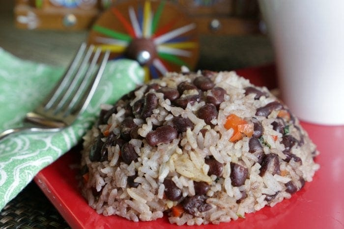

Gallo Pinto

Descripción
El gallo pinto es un platillo tradicional de Costa Rica el cual es el favorito de todos los "ticos". La gente usualmente lo come durante el desayuno pero no es raro que también lo consuman durante el almuerzo o cena ya que es altamente nutritivo y se considera una comida completa.
Por lo general se suele acompañar de huevo, puede ser "revuelto" o frito, de queso, natilla, plátano maduro, entre otros alimentos.
Ingredientes:
- Aceite
- Cebolla
- Chile dulce
- 2 tazas de arroz
- 1 taza de frijoles sin caldo
- Salsa Lizano, mantequilla, sazonador para gallo pinto Maggi y ajo en polvo
Pasos:
- Pica la cebolla y el chile dulce en cuadritos
- Coloca una sartén a fuego medio y agrega una cantidad moderada de aceite
- Cuando ya la sartén esté caliente, pon a freir la cebolla y el chile dulce
- Una vez que ya la cebolla se vea dorada, agrega las dos tazas de arroz
- Luego incluye la taza de frijoles
- Echa la salsa Lizano a tu gusto, dos cucharadas de mantequilla, un poco de sazonador para gallo pinto y un poquito de ajo en polvo
- Mezcla bien todos los ingredientes y continúa haciéndolo para que el sabor se distribuya uniformemente
- Cuando ya veas que el platillo esté bien cocinado, retíralo del fuego
- Puedes servirlo con tus acompañamientos favoritos